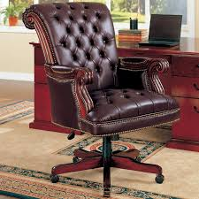

What makes a house a home is the people in it so don't you think that we should have a house that can protect the ones you love and make their lives easier?
Having an intelligent AI monitoring your house can help with identifying friends and family to identifying a burglar
Saved audio files and audio recordings of people's voices can be beneficial to help identify whose trying to get into the house and even catch audio of a crime scene that has happened across the street

Automatic doors, windows, and shutters. They can help when hands are full with groceries, if you ever leave your house and forget to lock the doors, or if animals are constantly trying to get in.

Amenities like house technology can put your family one step more to being That much safer
An automated reminder for events throughout the day, even as small as needing to take your medicine on time, and with our varity of languages even grandparents or parents who don't speak english can be notified throughout the day

With an automatic stove you'll never have to worry about wondering if your dishes are nurtritious or ever have to worry about having to make food at all

Not knowing if its gonna rain or snow, or if its going to be over 100 degrees. Then the included weather box can help you determine what to wear and what to expect out of the day

Nobody home to help you open the garage? Well you'll never have to worry about it again. It can memorize your liscense plate on your car and make sure that your car is the only one that could park in the garage

You'll never have to worry about adding pesticides or medicine for the grass when the sprinklers already mix it in with the water. You'll never have to water the gras again and it will always stay green and lucious
Automated cleaning devices can help from now to the long term, it can help maintain the house when the kids drag in mud after playing in the rain, or even clean up after you've had a long day and just want to lay down and sleep.
With an automatic dishwasher your kids and yourself will never have to worry about dirty dishes again
A sleek and nimble design, not even noticable and you'll wake up to a clean and spotless house

An incinerator can safely get rid of trash and waste without adding onto the wastelands in the garbage piles

When trash is too heavy or there is too much for both hands, the scrap rats will take care of it for you

You must do whatever you need to make sure the ones you love are safe and why wouldn't you want your house to ensure that they will be safe?
If YOU and YOUR whole family is asleep why wouldn't you want to be notified if your house caught on fire?

If you are rushing your loved ones out the fire how would you even think about trying to put out fire? So water sprinklers putting out the fire for YOU and YOUR family to escape.
Fire proof and small, these small water rats can put away a massive fire within seconds with their built in water systems

Equipped with green venom that can put out any fire out in seconds, and paired with the water rats, we will be certain to put out any fire in your house

Books, cards, tables, and a dim light. All these come together to create a healthy work enviornment, away from distractions.
Warmth and comfort to keep you focused at the task at hand
Need time away from the kids and from the world? listen to the endless recordings of poems being read, and music being played as your drift away into your much needed sleep
Legs aching because of the countless hours at work? Rest away on the luscious warm leather chairs and do your work on the marvelous marbled tables
Baby need help falling asleep? Bring them into our warm and cozy nursery so not only they can get a good nights rest but YOU can too.
A dark atmosphere is best for sleeping but also a bit of moonlight can help relax your infant even more.

Smells from the luscious forests, and the sound of the oceans waves calmly crashing at the shore, are certain to ensure your baby stays fast asleep all night long.